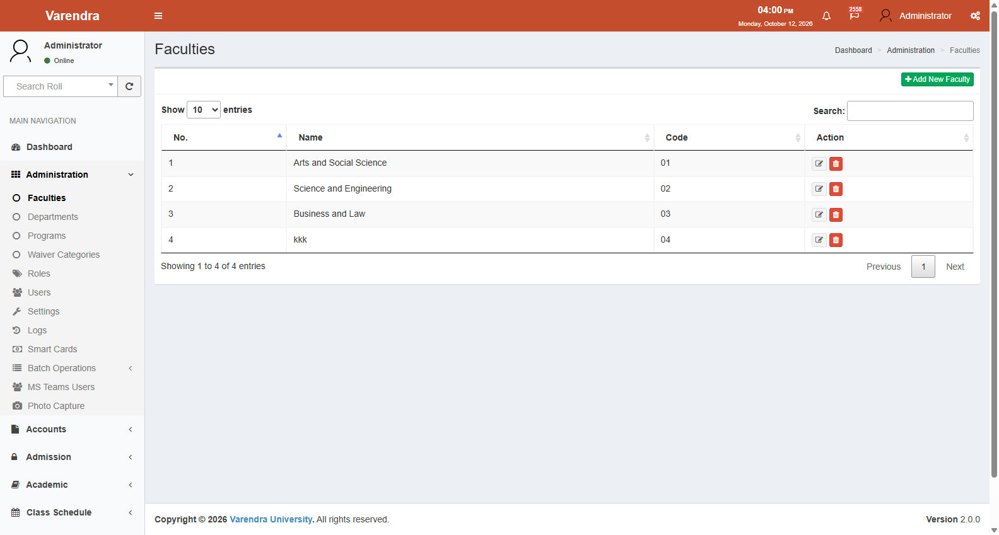
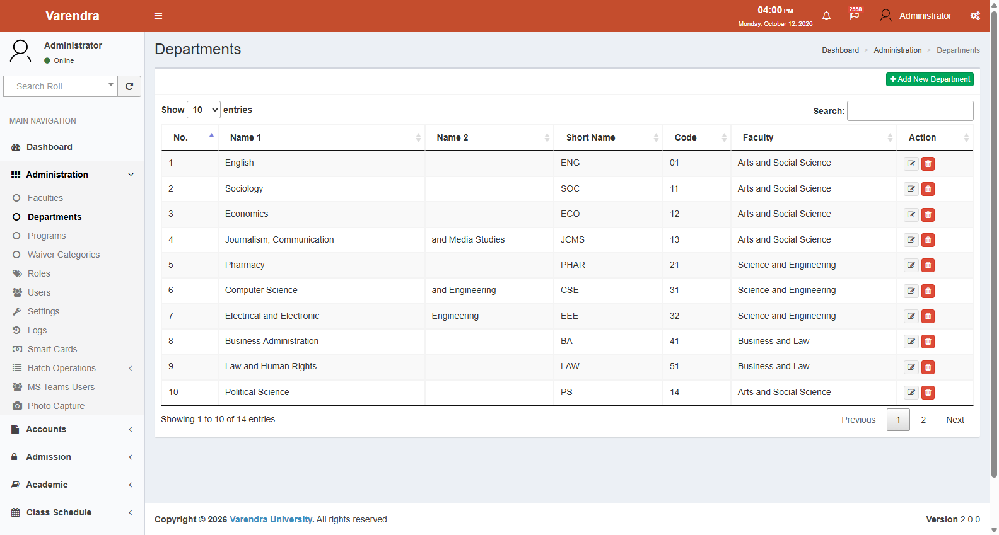
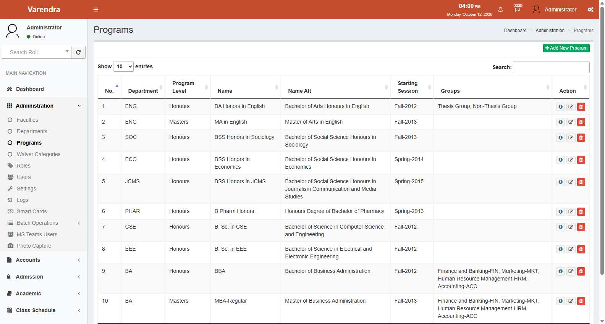
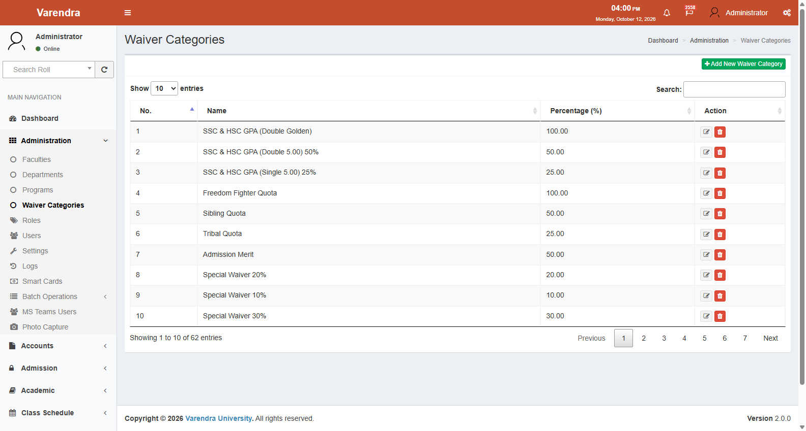
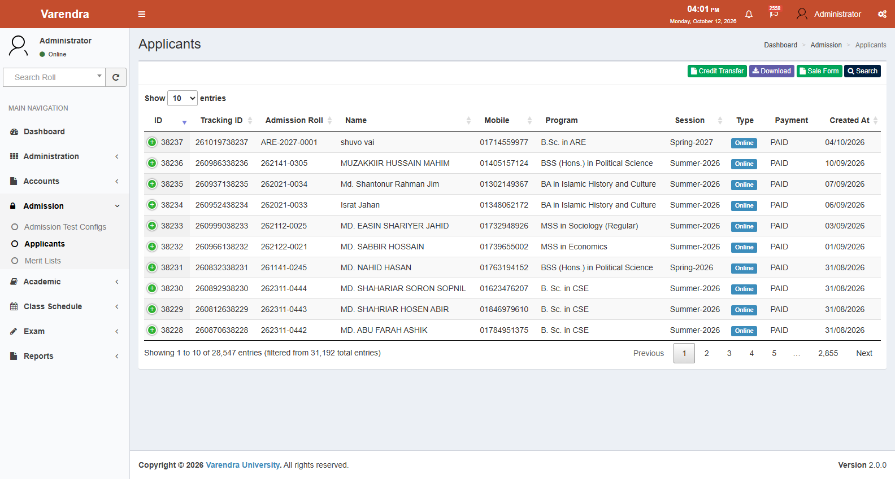
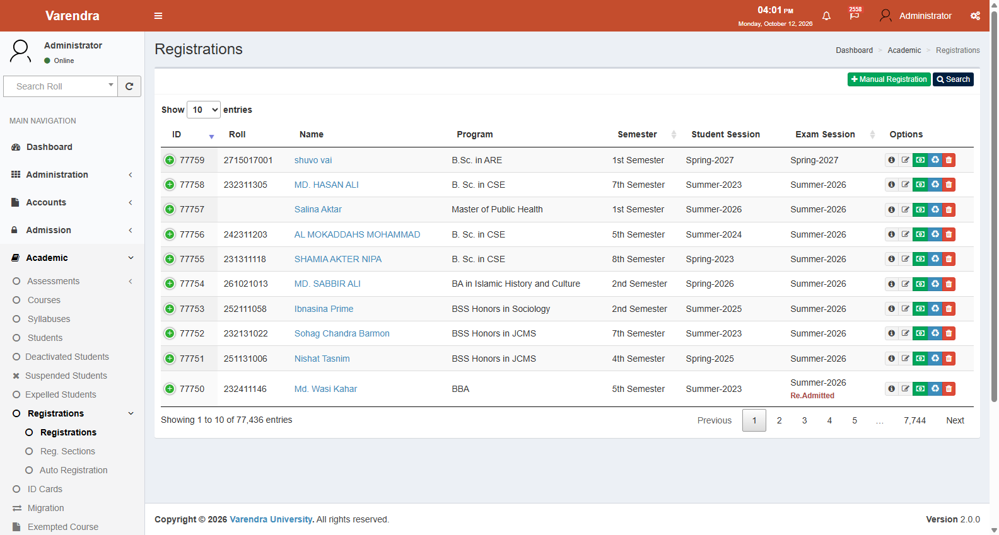
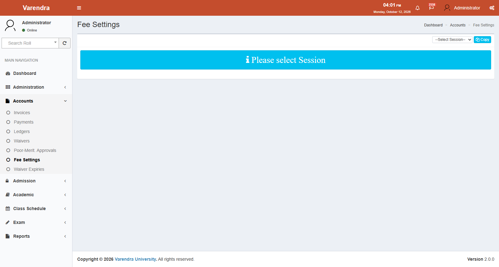

EasyMate ERP
/
User Manual
/
01. Functional Inventory
01 — Functional Inventory#
EasyMate ERP — Verified Modules and Capabilities#
This inventory was compiled by analyzing the actual codebase: routes, controllers, models, policies, database migrations, database seeders, and blade views. Each feature is classified according to the six audit verification categories.
Status Legend#
Status
Verification Classification
Meaning
Verified in source code Feature logic, route, controller, model, and view confirmed in codebase
Verified in the running UI Visually confirmed and interactively tested in a running UI (0 currently verified)
Partially implemented Feature exists in code but has stubs, partial logic, or incomplete views
Found in code but not UI-verified Code exists, but layout, rendering, and interaction not verified in runtime
Requires database or policy confirmation Logic depends on live database records (e.g., active grades table) or university policy
Not found Not present in the codebase (e.g., HRM routes, standalone student result route)
Note: All features marked as Verified in source code are also Found in code but not UI-verified because no live browser session was executed during this audit.
Module 1: Administration#
Navigation: Main Navigation → AdministrationRoute file: web_routes_administrator.phpNamespace: Administrator
1.1 Faculties#
Feature
Status
UI Location
Authorized Roles
Notes
List faculties
Administration → Faculties
Users with view faculties permission
Server-side datatable
Create faculty
Faculties → Create
Users with create faculties permission
Modal/form
Edit faculty
Faculties → Edit
Users with edit faculties permission
Delete faculty
Faculties list
Users with delete faculties permission
View faculty details
Faculties → Details
Users with view faculties permission
Shows associated departments

Figure 3.2: Faculties Directory: Master catalog of academic faculties and associated dean administrative records.
1.2 Departments#
Feature
Status
UI Location
Authorized Roles
Notes
List departments
Administration → Departments
Users with view departments permission
Create department
Departments → Create
Users with create departments permission
Linked to a faculty
Edit department
Departments → Edit
Users with edit departments permission
Delete department
Departments list
Users with delete departments permission
View department details
Departments → Details
Users with view departments permission

Figure 3.3: Academic Departments Directory: Department management: faculty associations, department head mappings, and academic programs.
1.3 Programs#
Feature
Status
UI Location
Authorized Roles
Notes
List programs
Administration → Programs
Users with view programs permission
Filtered by user's assigned departments
Create program
Programs → Create
Users with create programs permission
Links to department and program level
Edit program
Programs → Edit
Users with edit programs permission
View program details
Programs → Details
Users with view programs permission
Shows versions, groups, syllabi
Create program version
Programs → Versions → Create (/programs/versions/create/{program_id})
Users with create programs permission
Sets semesters_per_year, payment_installments, total_years

Figure 3.4: Academic Programs Directory: Undergraduate and graduate degree programs catalog and program version configurations.
1.4 Waiver Categories#
Feature
Status
UI Location
Authorized Roles
Notes
List waiver categories
Administration → Waiver Categories
Users with view waiver categories permission
Create waiver category
Waiver Categories → Create
Users with create waiver categories permission
Name, discount percentage
Edit waiver category
Waiver Categories → Edit
Users with edit waiver categories permission

Figure 3.6: Waiver & Scholarship Categories: University scholarship categories, discount percentage bands, and eligibility settings.
1.5 Users#
Feature
Status
UI Location
Authorized Roles
Notes
List users
Administration → Users
Users with view users permission
Server-side datatable
Create user
Users → Create
Users with create users permission
Name, email, department, roles, faculties
Edit user
Users → Edit
Users with edit users permission
View user details
Users → Details
Users with view users permission
Change own password
Top Nav / Users → Change Password
Authenticated users
Reset user password
Users list action (users.reset-password)
Users with edit users permission
Generates password, sets password_reset_required = 1
Notifications
Users → Notifications
Authenticated users
View system notifications
1.6 Roles and Permissions#
Feature
Status
UI Location
Authorized Roles
Notes
List roles
Administration → Roles
Users with view roles permission
Create role
Roles → Create
Users with create roles permission
Edit role (assign permissions)
Roles → Edit
Users with edit roles permission
Assign permissions to role
View role details
Roles → Details
Users with view roles permission
Verified Role IDs in source code:
- Role ID 1 = Admin (isAdmin()) isHead()) isController()) examinerOptions()) Other roles (Accounts, Admission, Academic Staff) are permission-based; specific role IDs depend on active database seeding
1.7 Settings#
Feature
Status
UI Location
Authorized Roles
Notes
List settings
Administration → Settings
Users with view settings permission
Create setting
Settings → Create
Users with create settings permission
Edit setting
Settings → Edit
Users with edit settings permission
Global and program-specific values
Delete program-specific value
Settings → Details (settings.program.destroy)
Users with edit settings permission
Verified Setting IDs from codebase:
- 1: Current exam session
- 2: Registration start date
- 3: Registration end date
- 4: First installment last date
- 5: Second installment last date
- 6: First installment last date (new students)
- 7: Poor application start date
- 8: Poor application end date
- 9: Admission start date
- 10: Admission last date
- 11: Teacher assessment start date
- 12: Teacher assessment end date
- 14: Third installment last date
1.8 Activity Logs#
Feature
Status
UI Location
Authorized Roles
Notes
View activity logs
Administration → Logs
Users with view logs permission
Spatie Activitylog datatable
View log details
Logs → Details
Users with view logs permission
Shows dirty attributes / before-after
1.9 MS Teams Users#
Feature
Status
UI Location
Authorized Roles
Notes
List MS Teams users
Administration → MS Teams Users
Users with view mscusers permission
Linked to student Wi-Fi/Teams access
Create/Edit MS Teams user
MS Teams Users → Create/Edit
Users with create/edit mscusers permission
1.10 Smart Cards & Photo Capture#
Feature
Status
UI Location
Authorized Roles
Notes
List smart cards
Administration → Smart Cards (smartcards.index)
Users with view smartcards permission
ID card RFID tracking
Photo capture interface
Administration → Photo Capture (photocapture.index)
Users with capturephoto permission
Webcam/upload to MinIO cloud storage
1.11 Batch Operations#
Feature
Status
UI Location
Authorized Roles
Notes
Applicant admit card SMS
Administration → Batch Operations → Applicant Admit Card SMS
Users with batchop permission
Bulk SMS dispatch
Module 2: Admission#
Navigation: Main Navigation → AdmissionRoute file: web_routes_admission.phpNamespace: Admission
2.1 Admission Test Configuration#
Feature
Status
UI Location
Authorized Roles
Notes
List test configs
Admission → Admission Test Configs (admissiontestconfigs.index)
Users with view admission test configs permission
Per-program, per-session
Create test config
Test Configs → Create
Users with create admission test configs permission
Venue, date, time, admit dates, form_online flag
Edit test config
Test Configs → Edit
Users with edit admission test configs permission
Copy test config
Test Configs → Copy (admissiontestconfigs.copy)
Users with create admission test configs permission
Duplicate to new session
Figure 4.1: Admission Test Configurations: Entrance exam configuration: session, dates, test venue, and admit card download schedules.
2.2 Applicants (Administrative Oversight)#
Feature
Status
UI Location
Authorized Roles
Notes
List applicants
Admission → Applicants (applicants.index)
Users with view applicants permission
Server-side datatable
View applicant details
Applicants → Details (applicants.show)
Users with view applicants permission
Profile, education, applications, payments
Edit applicant
Applicants → Edit
Users with edit applicants permission
Download applicants
Applicants → Download
Users with view applicants permission
Excel export
Change program
Applicants → Change Program (applicants.changeprogram)
Users with change program applicants permission
Transfer applicant
Applicants → Transfer (applicants.transfer)
Users with create students permission
Converts applicant to Student record
Check eligibility
Applicant Details → Check Eligibility
Users with edit applicants permission
Runs EligibilityChecker library
Update eligibility
Applicant Details → Update Eligibility
Users with edit applicants permission
Manual eligibility
Applicant Details → Manual Eligibility
Users with edit applicants permission
Manual override

Figure 4.3: Applicants Master Directory: Master applicant datatable with board verification flags, fee payment badges, and test statuses.
2.3 Admission Merit Lists#
Feature
Status
UI Location
Authorized Roles
Notes
List merit lists
Admission → Merit Lists (admissionmeritlists.index)
Users with view admission merit lists permission
Create merit list
Merit Lists → Create
Users with create admission merit lists permission
Ranks applicants based on test and board GPAs
2.4 Applicant Portal (Public-Facing)#
Feature
Status
UI Location
Authorized Roles
Notes
Home / landing page
/ or /front/applicant/homePublic
Lists active admission programs
View tuition fees
Home → Tuition Fees (front.applicant.home.tutionfees)
Public
Fee schedule breakdown
Register as applicant
Home → Register (front.applicant.home.register)
Public
Board data auto-fetched via Teletalk API
Login / Logout
/front/applicant/home/login, /logoutRegistered applicants
Mobile number + password
Reset password
Home → Reset Password
Public
Password sent via SMS to registered mobile
Profile sections
Applicant Profile (/front/applicant/profile/edit/{type})
Logged-in applicants
5 sections: pi, ci, eb, lg, at
Add exam result
Profile → Add Exam Result
Logged-in applicants
Honours/Masters degree results
Confirm SSC/HSC
Profile → Confirm SSC/HSC
Logged-in applicants
Verify board data against physical papers
Submit application
Applications → Create (front.applicant.applications.create)
Logged-in applicants
Select program, pay fee
Download admit card
Applications → Admit Card (front.applicant.applications.admit)
Logged-in applicants
PDF download when test config is complete
Figure 1.3: Applicant Profile & Education Details: Applicant personal details, contact address, SSC/HSC board verification data, and guardian info.
Module 3: Academic#
Navigation: Main Navigation → AcademicRoute file: web_routes_academic.phpNamespace: Academic
3.1 Syllabuses#
Feature
Status
UI Location
Authorized Roles
Notes
List syllabuses
Academic → Syllabuses (syllabuses.index)
Users with view syllabuses permission
Filtered by authorized programs
Create syllabus
Syllabuses → Create
Users with create syllabuses permission
Binds program, intake session, total credits
Edit syllabus
Syllabuses → Edit
Users with edit syllabuses permission
View syllabus details
Syllabuses → Details
Users with view syllabuses permission
Lists courses per semester
Add courses to syllabus
Syllabuses → Add Courses (syllabuses.addcourses)
Users with edit syllabuses permission
Map courses to semesters and elective groups
Copy syllabus
Syllabuses → Copy (syllabuses.copy)
Users with create syllabuses permission
Duplicates entire syllabus structure
Activate/Deactivate semester
Syllabus Details
Users with activate syllabuses permission
Locks/unlocks semester for course offering
3.2 Courses#
Feature
Status
UI Location
Authorized Roles
Notes
List courses
Academic → Courses (courses.index)
Users with view courses permission
Create course
Courses → Create
Users with create courses permission
Code, title, credits, marks, theory flag (1 or 0)
Edit course
Courses → Edit
Users with edit courses permission
Update sort order
Course Details (courses.updatesort)
Users with edit courses permission
3.3 Students#
Feature
Status
UI Location
Authorized Roles
Notes
List students
Academic → Students (students.index)
Users with view students permission
Server-side datatable
Create student
Students → Create
Users with create students permission
Direct manual student creation
Edit student
Students → Edit
Users with edit students permission
Assign roll number, session, semester
View student details
Students → Details
Users with view students permission
Profile, registrations, results, ledger, comments
Student ID card
Academic → ID Cards (students.card)
Users with card permission
Batch print ID cards
Login profile
Student Details → Login Profile
Users with edit students permission
Creates/manages Student Portal credentials
Student comments & files
Student Details → Comments / Attachments
Users with view students permission
Audit notes and file uploads
3.4 Registrations#
Feature
Status
UI Location
Authorized Roles
Notes
List registrations
Academic → Registrations → Registrations (registrations.index)
Users with view registrations permission
Server-side datatable
Create registration
Registrations → Create
Users with create registrations permission
Manual student course enrollment
Reg. Sections assignment
Academic → Registrations → Reg. Sections (registrations.section)
Users with change section permission
Assign section A/B/C to students
Redo registration
Registration Details (registrations.redo)
Users with reregister registrations permission
Semester drop
Registration Details (registrations.semesterdrop)
Users with semester drop permission
Mark semester as dropped
Force promotion
Registration Details (registrations.forcepromote)
Users with force promotion permission
Override progression eligibility

Figure 5.8: Semester Registrations Datatable: Course registrations management: semester enrollments, retake designations, and section allocations.
3.5 Auto Registrations#
Feature
Status
UI Location
Authorized Roles
Notes
List auto reg. logs
Academic → Registrations → Auto Registration (autoregistrations.index)
Users with create auto registrations permission
Batch run logs
Run auto registration
Auto Registration → Create (autoregistrations.create)
Users with create auto registrations permission
Batch enrolls cohort; enforces 50% earned credit rule
Retry failed student
Auto Registration Log → Retry (autoregistrations.retry)
Users with retry auto registrations permission
Re-evaluates individual student
3.6 Assessments & Assessment Rules#
Feature
Status
UI Location
Authorized Roles
Notes
List assessments
Academic → Assessments → Assessment List (assessments.index)
Users with view assessments permission
Attendance, CT, Mid, Final
Assessment rules
Academic → Assessments → Assessment Rules (assessmentrules.index)
Users with manage assessment rules permission
Weight percentages by course type
3.7 Transcripts & Certificates#
Feature
Status
UI Location
Authorized Roles
Notes
Transcripts index
Academic → Transcripts (transcripts.index)
Users with view transcripts permission
Partial transcript
Transcripts → Download Partial (transcripts.download.partial)
Users with download transcripts permission
For continuing students
Final transcript
Transcripts → Download Final (transcripts.download.final)
Users with download transcripts permission
For completed graduates
Provisional certificates
Academic → Certificates (certificates.index)
Users with certificates permission
Provisional degree certificates
Other certificates
Academic → Other Certificates (othercertificates.index)
Users with testimonials permission
Testimonials, Migration, MOI, Appeared certificates
3.8 Student Status & Applications#
Feature
Status
UI Location
Authorized Roles
Notes
Deactivated students
Academic → Deactivated Students (disabledstudents.index)
Users with view disabledstudents permission
Temporary leaves / withdrawal
Suspended students
Academic → Suspended Students (suspendedstudents.index)
Authorized users
Disciplinary suspensions
Expelled students
Academic → Expelled Students (expelledstudents.index)
Users with view expelledstudents permission
Disciplinary expulsions
Student migrations
Academic → Migration (studentmigrations.index)
Users with view studentmigrations permission
Program/department changes
Exempted courses
Academic → Exempted Course (exemptedcourses.index)
Users with view exemptedcourses permission
External credit transfers
Document applications
Academic → Student Applications → Document Applications (documentapplications.index)
Users with view documentapplications permission
Multi-department clearance workflow
Module 4: Accounts#
Navigation: Main Navigation → AccountsRoute file: web_routes_accounts.phpNamespace: Accounts
4.1 Fee Settings#
Feature
Status
UI Location
Authorized Roles
Notes
List fee settings
Accounts → Fee Settings (feesettings.index)
Users with view fee settings permission
Matrix by Account Head, Program, Session
Create fee setting
Fee Settings → Create
Users with create fee settings permission
Tuition per credit; fixed semester fees
Copy fee settings
Fee Settings → Copy (feesettings.copy)
Users with create fee settings permission
Duplicate schedule to new session

Figure 6.1: Academic Fee Settings Master: Program fee schedule matrix: per-credit tuition rate, lab fees, and fixed semester charges.
4.2 Invoices#
Feature
Status
UI Location
Authorized Roles
Notes
List invoices
Accounts → Invoices (invoices.index)
Users with view invoices permission
Server-side datatable
View invoice details
Invoices → Details (invoices.details)
Users with view invoices permission
Line items, installments, payments
Payment posting
Invoices → Posting (invoices.posting)
Users with approve invoices permission
Post cash or bank payment; enforces installment sequence
Late fee calculation
Invoices → Late Fee (invoices.latefee)
Users with edit invoices permission
Computes late fee excluding holidays
Reverse invoice
Invoice Details (invoices.reverse)
Users with reverse invoices permission
Reverses paid invoice
Miscellaneous invoices
Invoices → Miscellaneous (invoices.miscellaneous)
Users with miscellaneous invoices permission
Non-tuition fees
Printable Bank Slip
/printinvoices/index/{id} (printinvoices.index)Public with invoice ID
3-part bank voucher
4.3 Ledgers & Waivers#
Feature
Status
UI Location
Authorized Roles
Notes
Student ledgers
Accounts → Ledgers (ledgers.index)
Users with view ledgers permission
Debit (D) and Credit (C) double-entry ledger
Waivers management
Accounts → Waivers (waivers.index)
Users with view waivers permission
Applies scholarship discount strictly to tuition
Poor-Merit. Approvals
Accounts → Poor-Merit. Approvals (waivers.poorapproval)
Users with poor merit approve permission
Multi-step financial aid committee evaluation
Waiver expiries
Accounts → Waiver Expiries (waiverexpiries.index)
Users with view waiverexpiries permission
Tracks sibling waiver eligibility
Module 5: Examination#
Navigation: Main Navigation → ExamRoute file: web_routes_exam.phpNamespace: Exam
5.1 Examiners & Marks Entry#
Feature
Status
UI Location
Authorized Roles
Notes
List examiners
Exam → Examiners (examiners.index)
Users with view examiners permission
Course instructor mapping
Marks entry sheet
Exam → Marks (marks.index)
Assigned examiner OR create marks
Attendance, CT, Mid, Final; statuses: p,a,e
Retake/Improvement marks
Exam → Retake/Improvement Marks (marks.retests)
Users with view retest marks permission
Marks for retake/improvement candidates
Submit marks (Lock)
Marks → Submit (marks.submit)
Assigned examiner
Creates Submission record; freezes instructor editing
Approve marks
Marks → Approve (marks.approve)
Users with approve marks permission
Creates Approval and CourseResult records
Administrative undo
Marks → Undo (marks.undo)
Admin only (isAdmin())
Reverses approval/submission; unpublishes result
Mark edit log
Exam → Mark Edit Log (marks.editlogs)
Users with edit published marks permission
Post-publication correction audit trail
Figure 7.2: Course Examiner Assignments: Course evaluation instructor mapping: continuous and final exam examiner appointments per section.
5.2 Results & Publications#
Feature
Status
UI Location
Authorized Roles
Notes
List results
Exam → Results (results.index)
Users with view results permission
Published semester results
Create/Publish result
Results → Create (results.create)
Users with create results permission
Requires 100% course approval; calculates SGPA & rank
Tabulation sheet PDF
Results → PDF (results.pdf)
Users with view results permission
Official gazette tabulation
Attendance sheets
Exam → Attendance Sheet (attendance-sheets.index)
Users with view registrations permission
Exam hall attendance roll
Admit cards
Exam → Admit Card (admit.index)
Authorized exam staff
Bulk exam admit card printing
Feedback configuration
Exam → Feedback Config. (feedback.index)
Users with view feedback permission
Evaluation questionnaires and reports
Module 6: Class Schedule#
Navigation: Main Navigation → Class ScheduleRoute file: web_routes_schedule.phpNamespace: Schedule
Feature
Status
UI Location
Authorized Roles
Notes
Campus rooms
Class Schedule → Rooms (rooms.index)
Users with manage schedule
Rooms, buildings, seating capacities
Time slots
Class Schedule → Slots (slots.index)
Users with manage schedule
Lecture time periods (Sun–Thu)
Course offerings
Class Schedule → Course Offer (courseoffers.index)
Users with view preferences
Section configurations and teacher mappings
Schedule merges
Class Schedule → Schedule Merges (courseoffers.schedule-merges)
Users with manage schedule
Merging sections for joint scheduling
Schedule builder
Class Schedule → Schedule Create (schedules.create)
Users with manage schedule
Grid placement of courses, rooms, teachers
Conflicts detection
Class Schedule → Conflicts (schedule.conflicts)
Users with manage schedule
Flags teacher or room double-bookings
Schedule viewer
Class Schedule → Schedule Show (schedules.index)
Users with view schedule
Draft routine viewer
Live schedule sync
Class Schedule → Live Schedule (schedules-live.index)
Users with viewLive schedule
Syncs draft to live portal; generates PDF
Book rooms
Class Schedule → Book Rooms (room_booking.index)
Users with viewAny room booking
Ad-hoc room reservations
Module 7: Reports#
Navigation: Main Navigation → ReportsRoute file: web_routes_report.phpNamespace: Report
Feature
Status
UI Location
Authorized Roles
Notes
Registration report
Reports → Registration → Registration Report (report.registration.index)
Users with report permissions
By program and session
Dropout report
Reports → Registration → Dropout Report (report.registration.dropout)
Authorized report users
Students missing registrations
Individual reg. report
Reports → Registration → Individual Reg. Report (report.registration.individual)
Authorized report users
Non-collegiate report
Reports → Registration → Non Collegiate Report (report.registration.noncollegiate)
Authorized report users
Attendance-based penalty lists
Section-wise report
Reports → Registration → Section Wise Students (report.registration.sections)
Authorized report users
Student rosters per section
Accounts report
Reports → Accounts Report (report.accounts.index)
Authorized report users
Receivables, received, pending, bank-wise
Student reports
Reports → Student Report (report.student.index)
Authorized report users
Enrollment, completed, studying, cancelled, batch
Admission report
Reports → Admission Report (report.admission.index)
Authorized report users
Forms sold, multi-program, historical funnels
Result withheld report
Reports → Exam/Results → Result Withheld Report (report.withheld.index)
Authorized report users
Withheld student results
Program final notification
Reports → Exam/Results → Program Final Notification (report.result.programfinal)
Authorized report users
Official graduating cohort lists
CGPA report
Reports → Exam/Results → CGPA Report (report.result.cgpa)
Authorized report users
Cohort CGPA distributions
Waiver report
Reports → Waiver Report (report.waiver.index)
Authorized report users
Financial aid summaries
Teacher assessment report
Reports → Teacher Assessment Report (report.ta.index)
Authorized report users
Aggregate and individual teacher ratings
Examiner report
Reports → Examiner Report (report.examiner.index)
Authorized report users
Workload by examiner
UGC report
Reports → UGC (report.ugc.index)
Admin users
University Grants Commission annual statistics
Syllabus report
Reports → Syllabus Report (report.syllabus.index)
Admin users
Curriculum structures and offerings
Module 8: Student Portal#
Navigation: /front/student/Route file: web_routes_front.phpNamespace: Front\Student
Feature
Status
UI Location / URL Path
Authorized Users
Notes
Student login
/front/student/login (front.student.auth.login)Enrolled students
Roll Number + Password
Student logout
/front/student/logout (front.student.auth.logout)Logged-in students
Forgot / Change password
/front/student/forgotpassword, /changepasswordEnrolled students
SMS OTP password reset
Profile (Information)
Main Nav → Profile (/front/student/profile?type=i)
Logged-in students
Personal, academic, advisor info
Profile (Registrations)
Profile → Registrations tab (?type=rg)
Logged-in students
Historical semester registrations
Profile (Results)
Profile → Results tab (?type=r)
Logged-in students
Published grades, LG, GP, SGPA (No standalone route)
Profile (Payments)
Profile → Payments tab (?type=p)
Logged-in students
Invoices list and bank slip download
Profile (Admit Card)
Profile → Admit Card tab (?type=a)
Logged-in students
Download Mid-Term and Final Admit Cards
Class routine
Main Nav → Class Routine (/front/student/routine)
Logged-in students
Personalized routine grid and PDF download
Retake/Improvement
Main Nav → Retake/Imporvement (/front/student/profile/registration)
Logged-in students
Self-registration during open window
Teacher assessment
Main Nav → Teacher Assessment (/front/student/teacherassessments)
Logged-in students
Rate course instructors during TA window
Apply for Waiver
Main Nav → Apply for Poor-Merit. Waiver (poorapplications.create)
Logged-in students
Financial aid application
Apply for Documents
Main Nav → Apply for Documents (documentapplications.index)
Logged-in students
Request transcripts and certificates
Give Course Feedback
Main Nav → Give Course Feedback (feedback.create)
Logged-in students
Course curriculum evaluation
Academic Ordinance
Main Nav → Academic Ordinance (11th Academic Ordinance.pdf)
Logged-in students
Direct link to official university ordinance PDF
Figure 2.7: Student Document Applications: Self-service document applications: Transcripts, Provisional Certificates, and status tracker.
Figure 2.3: Student Weekly Class Routine: Personal weekly course routine grid: course codes, faculty instructors, and room allocations.
Module 9: API & Integrations#
Route file: api.phpNamespace: Api
Feature
Status
Notes
Invoice status & posting API
Bank and online payment gateway callbacks
VU internal payment API
Internal digital payment integration
Student info API
External data exchange
Certificate verification API
Token-based certificate authentication
Kiosk API
On-campus self-service kiosk (profile, results, payments)
Thesis management API
Integrates course registrations with thesis portal
Smart card API
RFID card encoding and issuance
Board data API / Scraper
SSC/HSC verification via Teletalk gateway
Public student verification
/front/services/studentverify/certificate/{token}
Outstanding Questions & Verification Dependencies#
Active Database Role Identifiers Beyond Admin (ID 1), Head (ID 7), Controller (ID 11), and Teacher (name "Teacher"), staff role IDs (Accounts Officer, Admission Officer, Academic Office Staff) depend on dynamic database records.Grading Scale Authority & Database Records Grade::calculate() dynamically queries all rows from the grades table. While GradesTableSeeder.php seeds a standard 10-tier scale (A+ 4.00 down to F 0.00), exact active grade boundaries, minimum passing marks, and honors criteria must be verified against the live grades database table and Varendra University's 11th Academic Ordinance .Payment Gateway Provider Settings API endpoints for payment posting are verified in code, but live merchant gateway credentials (bKash, Nagad, bank SSL) are environment-specific (.env).SMS & Email Notification Delivery Notification classes (TuitionFeePaid, AdminPasswordReset) exist in code; physical SMS delivery depends on external SMS gateway credentials.